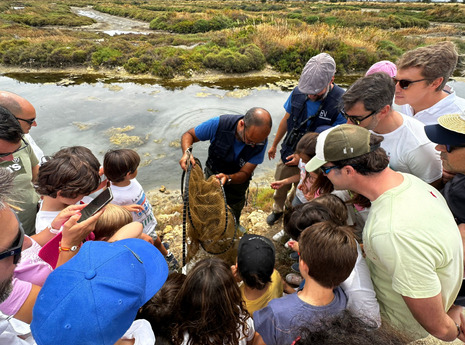
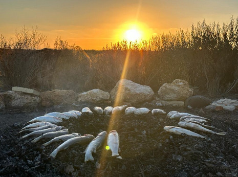
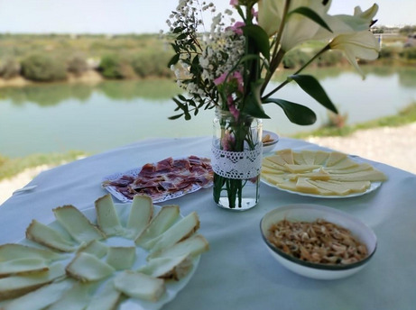
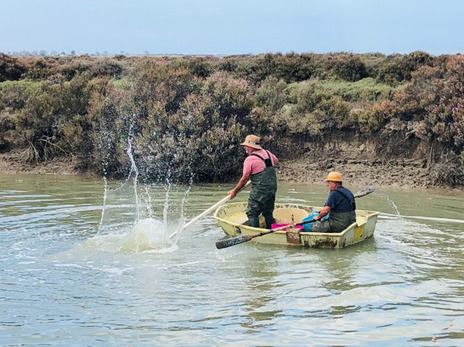

Vive las experiencias de Estero Natural
Sumérgete en un entorno único donde la naturaleza, la tradición y el sabor se encuentran para ofrecerte momentos inolvidables. En Estero Natural, cada experiencia está diseñada para conectar contigo y con el entorno de forma auténtica y respetuosa.
Ya sea que busques descubrir la biodiversidad de los esteros, aprender sobre la acuicultura tradicional, saborear productos locales o simplemente desconectar del mundo, aquí encontrarás una actividad para ti.

Visitas Guiadas
Adéntrate en el corazón del Parque Natural Bahía de Cádiz de la mano de nuestros guías expertos. Explora la riqueza paisajística y cultural de las marismas, conoce las artes de pesca tradicionales y degusta productos de estero. Una experiencia ideal para los amantes de la naturaleza y la historia.

Visitas con Degustaciones
Disfruta de nuestros packs experienciales que combinan la belleza del entorno con la mejor gastronomía local. Mariscadas, puestas de sol, asados tradicionales y mucho más. Perfecto para grupos y celebraciones especiales.

Catas Gastronómicas
Descubre el sabor del mar con nuestras catas de ostras y camarones. Talleres guiados, maridajes locales y degustaciones que te harán ver estos productos con otros ojos (y paladar).

Despesques
Vive un espectáculo tradicional y emocionante: la pesca con trasmallos, la recolección manual y el asado en hoguera. Una experiencia que revive las raíces del estero y celebra la vida marina.

Experiencias personalizadas
Creamos actividades a medida para quienes buscan algo único: talleres, rutas temáticas, actividades privadas y propuestas exclusivas adaptadas a tus intereses.

Tours Libres
Si prefieres explorar a tu ritmo, recorre nuestros senderos interpretativos, disfruta de las vistas desde los miradores, degusta tapas en nuestra food truck y aprende gracias a nuestra app de ecoturismo.